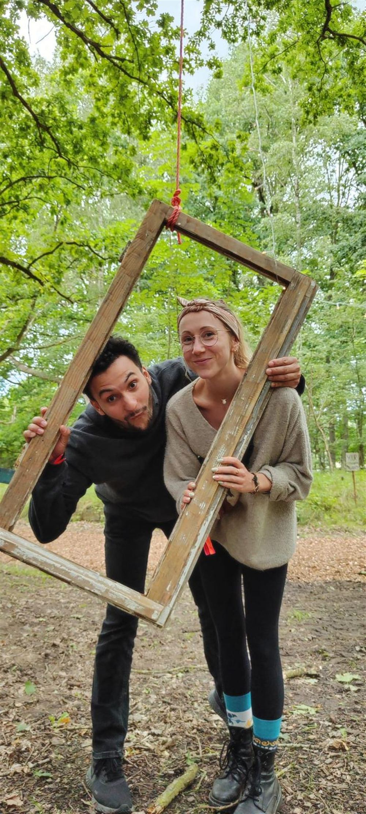
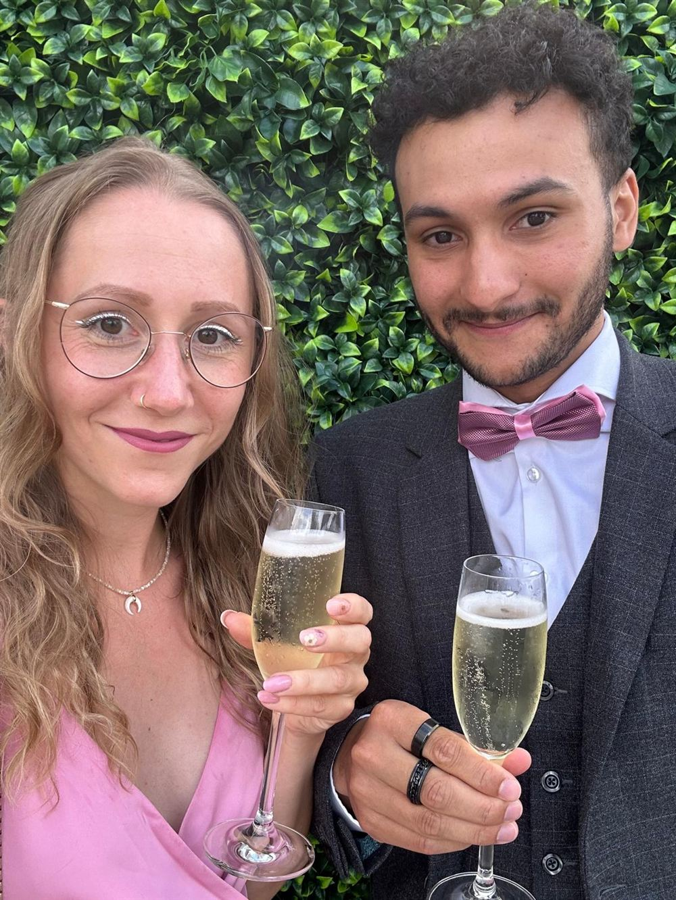
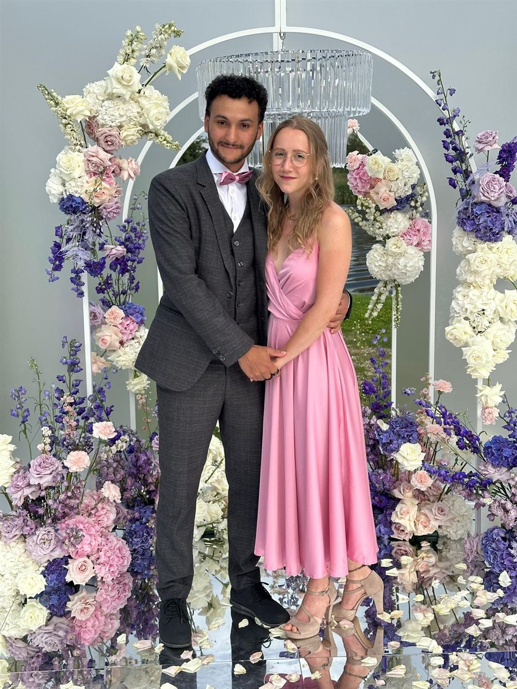
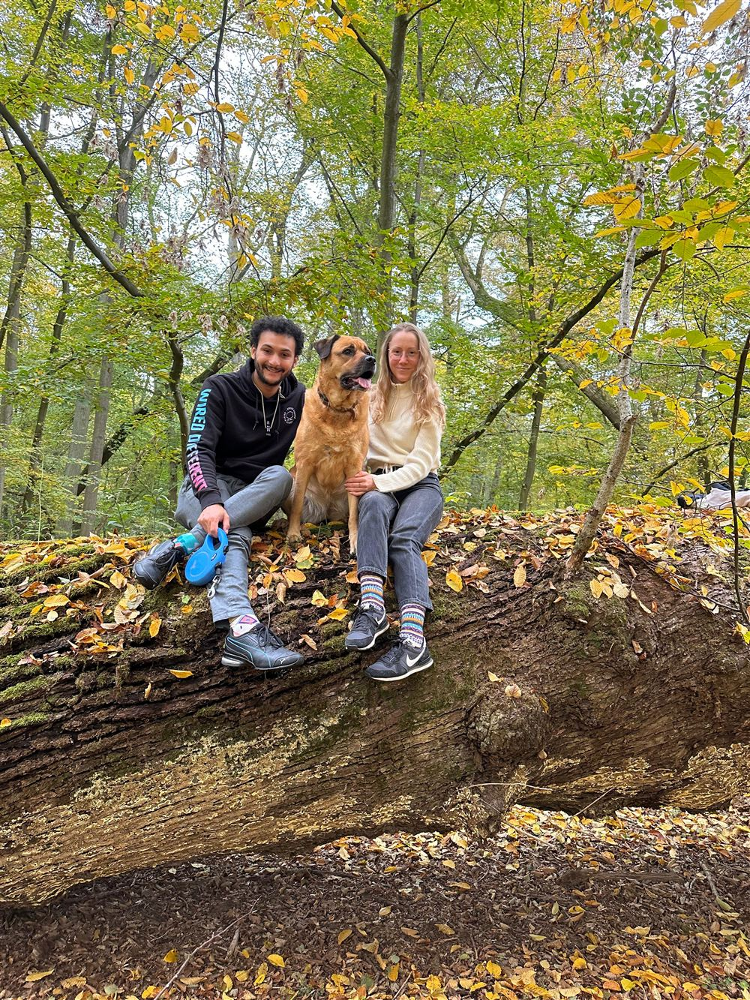
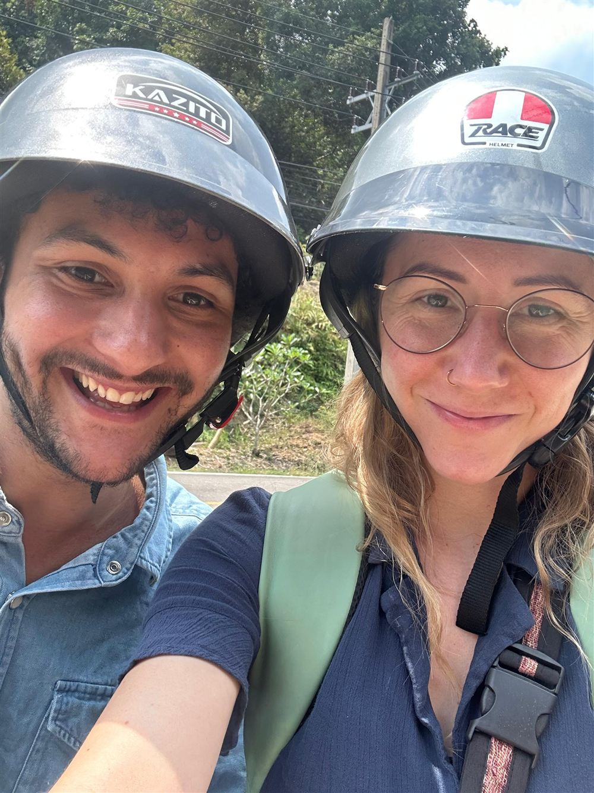
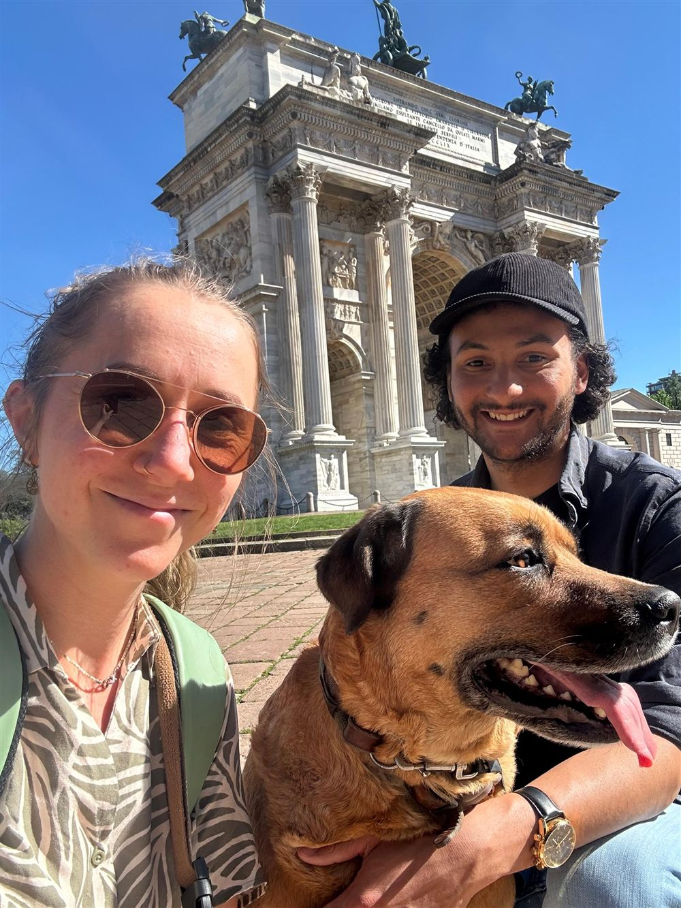

Unsere Geschichte
Vom ersten Urlaub auf Kos zu heute
Scrollen, um weiterzulesen ↓
Im Frühjahr 2020 nahm alles seinen Anfang. Durch Lea und Leon wurde ich zu einem WG-Geburtstag in die Wilhelm-Kobelt-Straße 24 eingeladen. Damals hätte ich nicht gedacht, dass aus diesem eigentlich unscheinbaren Abend einmal eine so große Geschichte entstehen würde.
Ich fand dich schon damals interessant, auch wenn du vielleicht nicht unbedingt mein ursprünglicher Typ warst. Rückblickend ist es ziemlich verrückt, dass aus einem Geburtstag im Wohnzimmer eine Beziehung entstehen sollte – zumal du mich anfangs gar nicht so interessant fandest.
Nach diesem ersten Treffen kamst du nach meinem Einzug immer häufiger zu Besuch. Es gab keinen einzelnen dramatischen Wendepunkt. Stattdessen verbrachten wir einfach immer mehr Zeit miteinander: mit Gesprächen, Blicken, Spielen und einer wachsenden Vertrautheit.

Im August kam Hani in unser Leben. Es war unser erstes Treffen mit ihr, und die beiden passten damals schon perfekt zusammen. Hani war neugierig, lebendig, sanft und liebevoll. Es war kein Wunder, dass zwischen euch schnell eine besondere Bindung entstand.
Langsam begannen sich unsere Gefühle zu verändern. Die Gespräche wurden länger, die gemeinsame Zeit intensiver. Du wurdest immer offener und wir führten stundenlange Gespräche.
Am 25. Januar 2021 sollte die Anspannung endlich ihr Ventil finden. Gegen Mitternacht, nach einem stundenlangen Gespräch, fanden sich endlich unsere Lippen.
Es war der schönste Kuss, den ich bis dahin erlebt hatte, vielleicht sogar der schönste Abend. Es fühlte sich an wie der leise Auftakt zu etwas Großem. Die Zeit schien stillzustehen, und als sich unsere Lippen im Morgengrauen wieder trennten, war eine Verbindung entstanden, die alles Kommende tragen sollte.
.jpeg)
Im Februar erlebte Hani mit uns ihren ersten Schnee. Für mich war das ein besonderer Moment, in dem ich schon nach nur zwei Monaten das Gefühl hatte, dass wir nicht einfach nur ein Paar, sondern eine kleine Familie sind.
Im Juni 2021 entstand ein erstes Bild von Mali mit Hani in Göttingen. Im Juli beschlossen wir, unseren ersten gemeinsamen Urlaub zu machen. Es sollte nach Kos gehen – eine kleine Reise nach Mühlhausen war ebenfalls Teil dieser Zeit.
Die Reise nach Kos tat uns beiden und unserer Beziehung gut. Sonne, Meer, Freiheit und einfach zu zweit sein. Alles, was uns fehlte, war etwas Exotik. Und so beschlossen wir, im März 2022 noch eine Reise zu wagen, die alles in den Schatten stellen sollte.
Auf Kos verbrachten wir viel Zeit miteinander, entdeckten die Insel und genossen das gemeinsame Unterwegssein. Mali zeigte mir außerdem, dass Katzen auch toll sein können – bei den vielen Katzen auf der Insel war das kaum zu vermeiden.

Im März 2022 ging es nach Sri Lanka. Die Reise begann in Colombo, von wo aus wir mit dem Tuk-Tuk loszogen.
Mali musste zunächst selbst fahren. Die Leute schauten erstaunt, weil sie offenbar nicht oft Frauen am Steuer sahen. Ich fand das ziemlich cool und war stolz auf ihre Lässigkeit.
Wir entdeckten die Insel auf unsere eigene Weise, begegneten Schildkröten, gingen ins Meer und sammelten Erinnerungen, die uns noch lange begleiten sollten. Das erste Mal mit einer Meeresschildkröte zu schwimmen, war ein ganz besonderer Moment. Auch die kleinen Fische, die an unseren Füßen knabberten, sorgten für reichlich Kitzeln.
Diese Reise hat uns richtig zusammengeschweißt. Ich merkte, wie schön es ist, solche Erinnerungen mit jemandem zu teilen. Mir wurde klar, dass wir zusammen noch viele weitere Abenteuer und Reisen erleben würden.

Mit der Zeit entwickelte sich aus unserer Beziehung ein richtiges Zuhausegefühl. Wir sammelten Erinnerungen, machten gemeinsame Erfahrungen und wuchsen immer weiter zusammen.
Ein weiterer wichtiger Schritt war das erste Kennenlernen mit der Familie. Aus unserer kleinen Welt zu zweit wurde langsam etwas Größeres.
Wir besuchten unser erstes gemeinsames Festival. Ich war zunächst skeptisch, aber du hast mich immer wieder überzeugt und es war klasse!
Ein weiterer gemeinsamer Wintermoment, festgehalten auf einem Foto vor einer festlich beleuchteten Kulisse.

Im März 2024 reisten wir nach Vietnam. Ich fand es besonders schön, dir das Land zu zeigen, in das ich mich damals verliebt hatte.
Gemeinsam erkundeten wir die Landschaft, besuchten besondere Orte und erlebten das Land aus einer neuen Perspektive. Ein besonderes Erlebnis war, dass du hier zum ersten Mal auch körperlich eine der größten Schildkröten sehen konntest.
Diese Reise fühlte sich wieder ganz besonders an. Es war schön, einen Ort, der mir so viel bedeutete, mit dir zu teilen.
Wir waren gemeinsam auf einer Hochzeit. Du hast mit deinen Dance-Moves alles abgerissen – eine legendäre Performance!

Im Juni 2025 nahmen wir Hani mit dem Camper in den Urlaub. Damit begann ein neues Kapitel unserer gemeinsamen Abenteuer.
Wir machten Ausflüge, verbrachten Zeit in der Natur und genossen die Freiheit, einfach gemeinsam unterwegs zu sein. Mali durfte natürlich auch ans Steuer.
Ein besonders schöner Moment war unser erster gemeinsamer Ausflug mit dem Camper. Die erste Nacht verbrachten wir hinter uns im Camper. Morgens hatte ich Hani zum Kuscheln zu uns ins Bett gehoben. Weil die Matratze noch zu klein war, haben wir drei uns ziemlich zusammenquetschen müssen.
.jpeg)
Wir besuchten unter anderem den Steinbruchsee und Schloss Hundisburg. Am See musste ich Hani immer wieder von den Klippen weglocken, weil sie gerne zehn Meter tief springen wollte.
Das Schloss gefiel uns sehr. Wir gönnten uns einen Aperol auf der Terrasse und ließen den Tag anschließend entspannt auf dem Campingplatz ausklingen.
Hani (und wir) wollten gar nicht wieder zurück.
.jpeg)
Mit selbstgemachten Waffeln und Lauchkäse ging es auf einen langen Schneespaziergang an der Schrote. Ein schöner Wintertag, den wir gemeinsam festhielten.
Frau Liebling musste mal wieder raus. Also ging es mit Picknick an den AWG-See II bei Gommern. Wir verbrachten Zeit mit Hani und Lesen.
Hani schaffte es maximal zweimal, ohne Pause rauf und runter zu rennen. Da musste jemand beschäftigt werden!

Ein weiterer gemeinsamer Ausflug führte uns in den Wildpark Schwarze Berge.